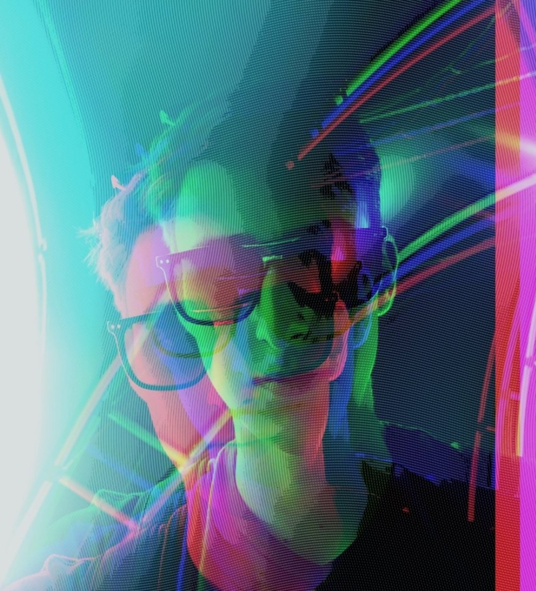

Junior Developer Resume!
1. Yegor Busko
2. Contact info
3. Summary
I'm 19. Always liked Math and since the 10th grade was interested in programming.
Entered the BSU at the Faculty of Applied Mathematics and Computer Science
in 2018.
In the university there is a lot of Math but programming is also present.
Mostly like algorithmic tasks, learning English & German.
4. Programming languages knowledge (on 19.09.2020) :
-
middle: C/C++, Java
-
beginner: C#, JavaScript / HTML / CSS, SQL
Worked with: IntelliJ IDEA, Visual Studio, Postman, Wolfram Mathematica, Scratch
5. Code examples
The one of the latest Code examples on Algorithms subject in BSU
(one function in Java):
public static void dijkstra2() {
int j, way;
m2[n] = 0;
queue.add(new El(n, 0, false));
while (!queue.isEmpty()) {
int i = queue.pollFirst().num;
if (H2[i] == 0) {
H2[i] = 1;
for (El edge : nodeList[i]) {
if (!edge.direction) {
j = edge.num;
way = edge.prior;
if (m2[i] + way < span m2[j]) {
m2[j] = m2[i] + way;
queue.add(new El(j, m2[j], false));
}
}
}
}
}
}
6. Experience
In the University, in addition to many laboratory works, worked with 'IRunner' - automatic testing system.
From February to May software engineering company Exadel practiced us.
7. Education
-
I study at the FAMCS, BSU. Will graduate in 2022.
-
In 2016 passed 3month courses 'Website design in Adobe Photoshop'.
-
Everyday learning English (B1+) and German (A2).
8. English
Studied English at school; with a tutor; often watch movies in English.